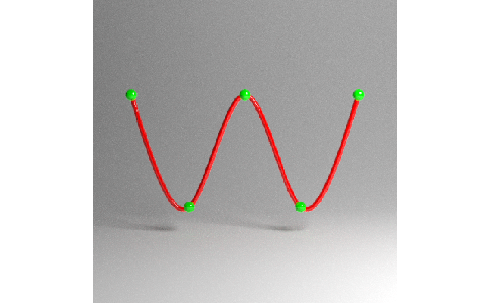
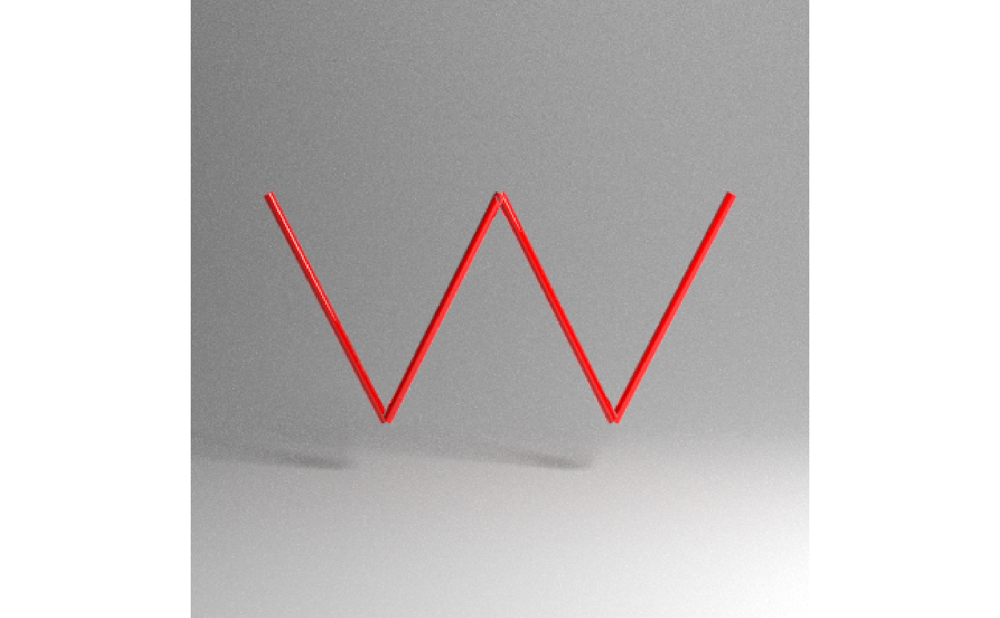
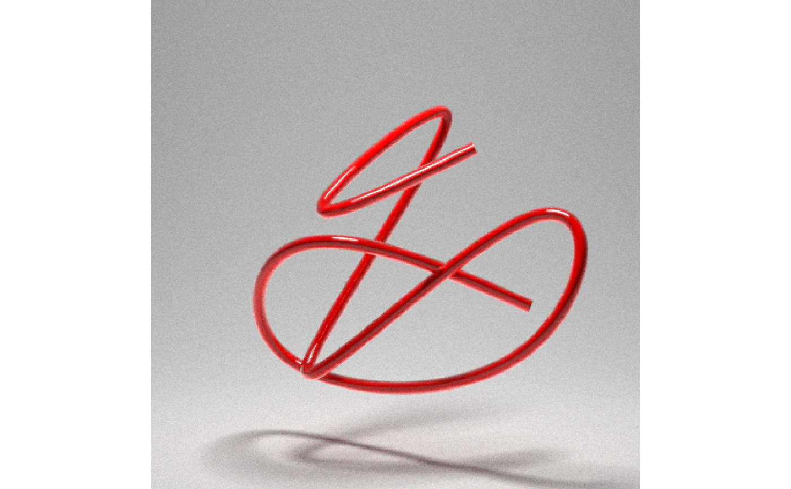
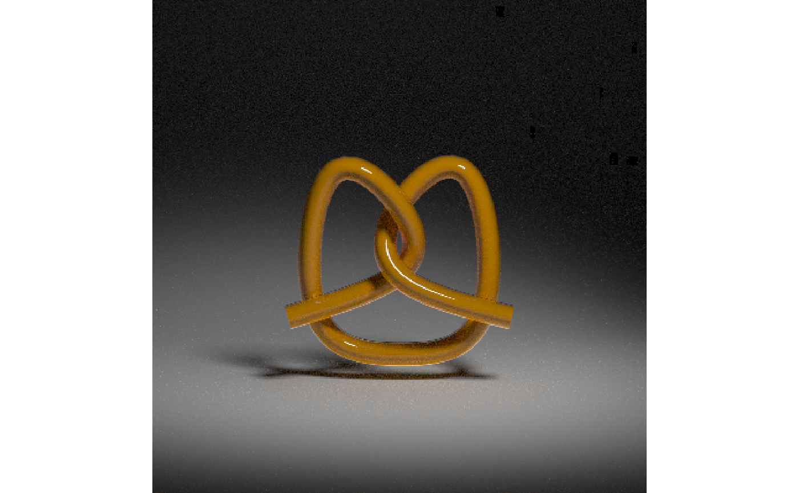
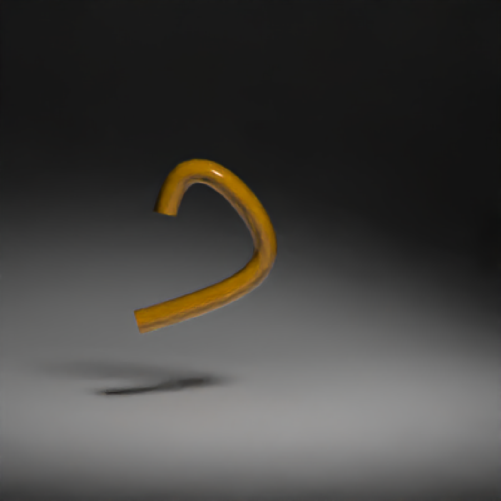
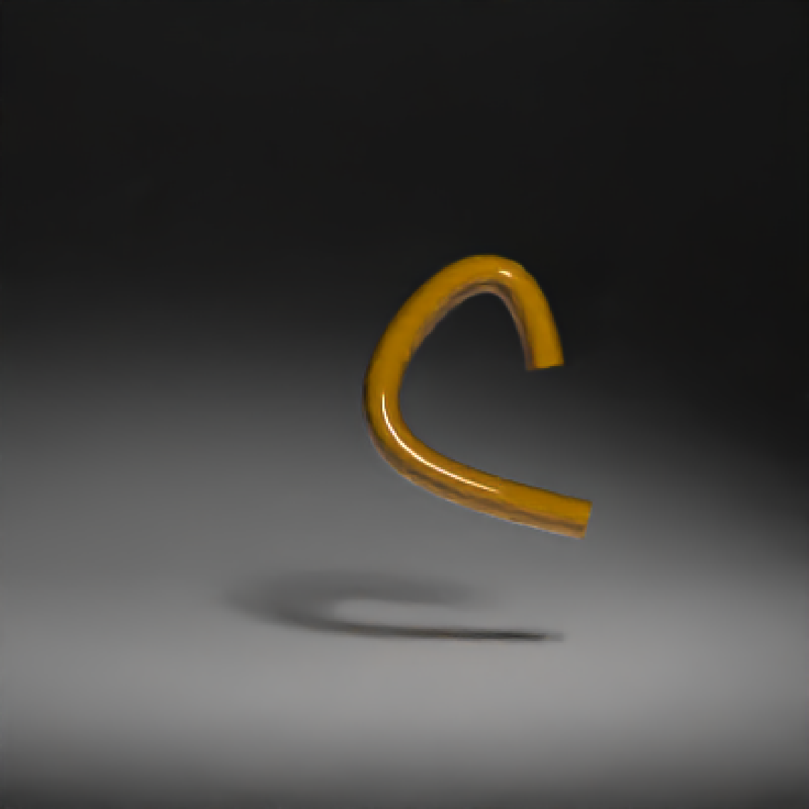
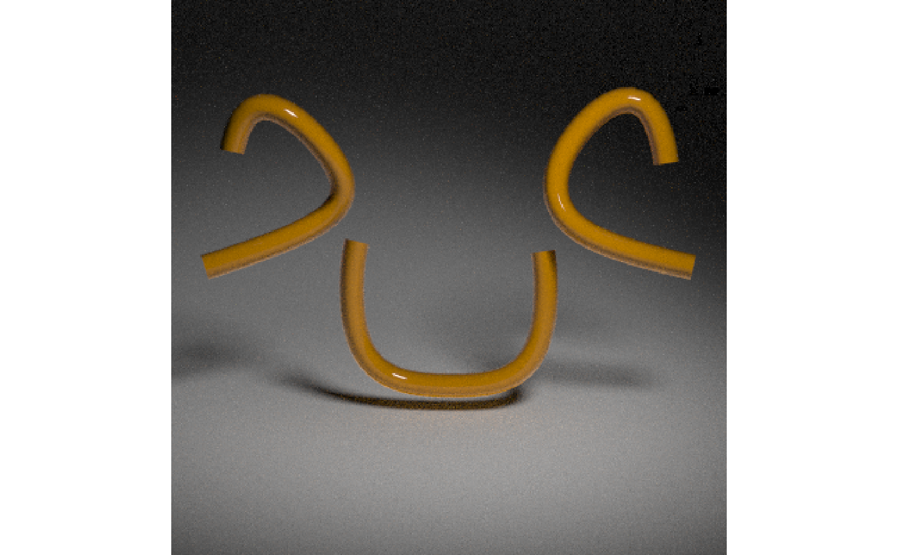

Either a closed or open path made up of bezier curves that go through the specified points (with continuous first and second derivatives), or straight line segments.
path( points, x = 0, y = 0, z = 0, closed = FALSE, straight = FALSE, precomputed_control_points = FALSE, width = 0.1, width_end = NA, u_min = 0, u_max = 1, type = "cylinder", normal = c(0, 0, -1), normal_end = NA, material = diffuse(), angle = c(0, 0, 0), order_rotation = c(1, 2, 3), velocity = c(0, 0, 0), flipped = FALSE, scale = c(1, 1, 1) )
Arguments
| points | Either a list of length-3 numeric vectors or 3-column matrix/data.frame specifying the x/y/z points that the path should go through. |
|---|---|
| x | Default `0`. x-coordinate offset for the path. |
| y | Default `0`. y-coordinate offset for the path. |
| z | Default `0`. z-coordinate offset for the path. |
| closed | Default `FALSE`. If `TRUE`, a final segment will be added that connects the first and last points (unless they are already the same). Note: This final connection does not have continuous 1st and 2nd derivatives. |
| straight | Default `FALSE`. If `TRUE`, straight lines will be used to connect the points instead of bezier curves. |
| precomputed_control_points | Default `FALSE`. If `TRUE`, `points` argument will expect a list of control points calculated with the internal rayrender function `rayrender:::calculate_control_points()`. |
| width | Default `0.1`. Curve width. |
| width_end | Default `NA`. Width at end of path. Same as `width`, unless specified. |
| u_min | Default `0`. Minimum parametric coordinate for the path. |
| u_max | Default `1`. Maximum parametric coordinate for the path. |
| type | Default `cylinder`. Other options are `flat` and `ribbon`. |
| normal | Default `c(0,0,-1)`. Orientation surface normal for the start of ribbon curves. |
| normal_end | Default `NA`. Orientation surface normal for the start of ribbon curves. If not specified, same as `normal`. |
| material | Default |
| angle | Default `c(0, 0, 0)`. Angle of rotation around the x, y, and z axes, applied in the order specified in `order_rotation`. |
| order_rotation | Default `c(1, 2, 3)`. The order to apply the rotations, referring to "x", "y", and "z". |
| velocity | Default `c(0, 0, 0)`. Velocity of the cube. |
| flipped | Default `FALSE`. Whether to flip the normals. |
| scale | Default `c(1, 1, 1)`. Scale transformation in the x, y, and z directions. If this is a single value, number, the object will be scaled uniformly. Note: emissive objects may not currently function correctly when scaled. |
Value
Single row of a tibble describing the cube in the scene.
Examples
# \donttest{ #Generate a wavy line, showing the line goes through the specified points: wave = list(c(-2,1,0),c(-1,-1,0),c(0,1,0),c(1,-1,0),c(2,1,0)) point_mat = glossy(color="green") generate_studio(depth=-1.5) %>% add_object(path(points = wave,material=glossy(color="red"))) %>% add_object(sphere(x=-2,y=1,radius=0.1,material=point_mat)) %>% add_object(sphere(x=-1,y=-1,radius=0.1,material=point_mat)) %>% add_object(sphere(x=0,y=1,radius=0.1,material=point_mat)) %>% add_object(sphere(x=1,y=-1,radius=0.1,material=point_mat)) %>% add_object(sphere(x=2,y=1,radius=0.1,material=point_mat)) %>% add_object(sphere(z=5,x=5,y=5,radius=2,material=light(intensity=15))) %>% render_scene(samples=500, clamp_value=10,fov=30)#Here we use straight lines by setting `straight = TRUE`: generate_studio(depth=-1.5) %>% add_object(path(points = wave,straight = TRUE, material=glossy(color="red"))) %>% add_object(sphere(z=5,x=5,y=5,radius=2,material=light(intensity=15))) %>% render_scene(samples=500, clamp_value=10,fov=30)#We can also pass a matrix of values, specifying the x/y/z coordinates. Here, #we'll create a random curve: set.seed(21) random_mat = matrix(runif(3*9)*2-1, ncol=3) generate_studio(depth=-1.5) %>% add_object(path(points=random_mat, material=glossy(color="red"))) %>% add_object(sphere(y=5,radius=1,material=light(intensity=30))) %>% render_scene(samples=500, clamp_value=10)#We can ensure the curve is closed by setting `closed = TRUE` generate_studio(depth=-1.5) %>% add_object(path(points=random_mat, closed = TRUE, material=glossy(color="red"))) %>% add_object(sphere(y=5,radius=1,material=light(intensity=30))) %>% render_scene(samples=500, clamp_value=10)#Finally, let's render a pretzel to show how you can render just a subset of the curve: pretzel = list(c(-0.8,-0.5,0.1),c(0,-0.2,-0.1),c(0,0.3,0.1),c(-0.5,0.5,0.1), c(-0.6,-0.5,-0.1), c(0,-0.8,-0.1), c(0.6,-0.5,-0.1),c(0.5,0.5,-0.1), c(0,0.3,-0.1),c(-0,-0.2,0.1), c(0.8,-0.5,0.1)) #Render the full pretzel: generate_studio(depth = -1.1) %>% add_object(path(pretzel, width=0.17, material = glossy(color="#db5b00"))) %>% add_object(sphere(y=5,x=2,z=4,material=light(intensity=20,spotlight_focus = c(0,0,0)))) %>% render_scene(samples=500, clamp_value=10)#Here, we'll render only the first third of the pretzel by setting `u_max = 0.33` generate_studio(depth = -1.1) %>% add_object(path(pretzel, width=0.17, u_max=0.33, material = glossy(color="#db5b00"))) %>% add_object(sphere(y=5,x=2,z=4,material=light(intensity=20,spotlight_focus = c(0,0,0)))) %>% render_scene(samples=500, clamp_value=10)#Here's the last third, by setting `u_min = 0.66` generate_studio(depth = -1.1) %>% add_object(path(pretzel, width=0.17, u_min=0.66, material = glossy(color="#db5b00"))) %>% add_object(sphere(y=5,x=2,z=4,material=light(intensity=20,spotlight_focus = c(0,0,0)))) %>% render_scene(samples=500, clamp_value=10)#Here's the full pretzel, decomposed into thirds using the u_min and u_max coordinates generate_studio(depth = -1.1) %>% add_object(path(pretzel, width=0.17, u_max=0.33, x = -0.8, y =0.6, material = glossy(color="#db5b00"))) %>% add_object(path(pretzel, width=0.17, u_min=0.66, x = 0.8, y =0.6, material = glossy(color="#db5b00"))) %>% add_object(path(pretzel, width=0.17, u_min=0.33, u_max=0.66, x=0, material = glossy(color="#db5b00"))) %>% add_object(sphere(y=5,x=2,z=4,material=light(intensity=20,spotlight_focus = c(0,0,0)))) %>% render_scene(samples=500, clamp_value=10, lookfrom=c(0,3,10))# }